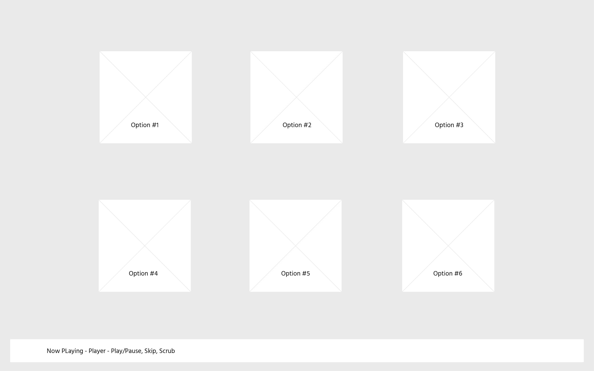

Next. Music Player
An effortless playlist generator
Next. is a playlist generator designed to take the stress away from choosing the right song. An intentionally paired back interface presents the viewer with a balance of control and restraint. The webpage is limited to a small selection of tracks and the project serves as a demonstration of UI and development skills.

Design process
A number of wireframes were considered focusing on different aspects of the user experience. The three concepts were based around either; the current playing track (Focused), a small selection of upcoming options (Light), or a lot of information and choice (Rich). Pictured below are the two concepts ‘Focused’ and ‘Rich’.


Below is the chosen wireframe, ‘Light’, which was most aligned with the original vision. The ‘Light’ concept put the most emphasis on upcoming track options. Next. is designed as a tool that will disappear into the background of social settings making song selection a simple task, by displaying a selection of 4-6 songs the user has an amount of control without an overwhelming choice.
DESIGN DEVELOPMENT: Why it was important to develop a render; type, scale, pallete

Development process
How it was built, what languages and credit to helpful resources.
A passage about the final product